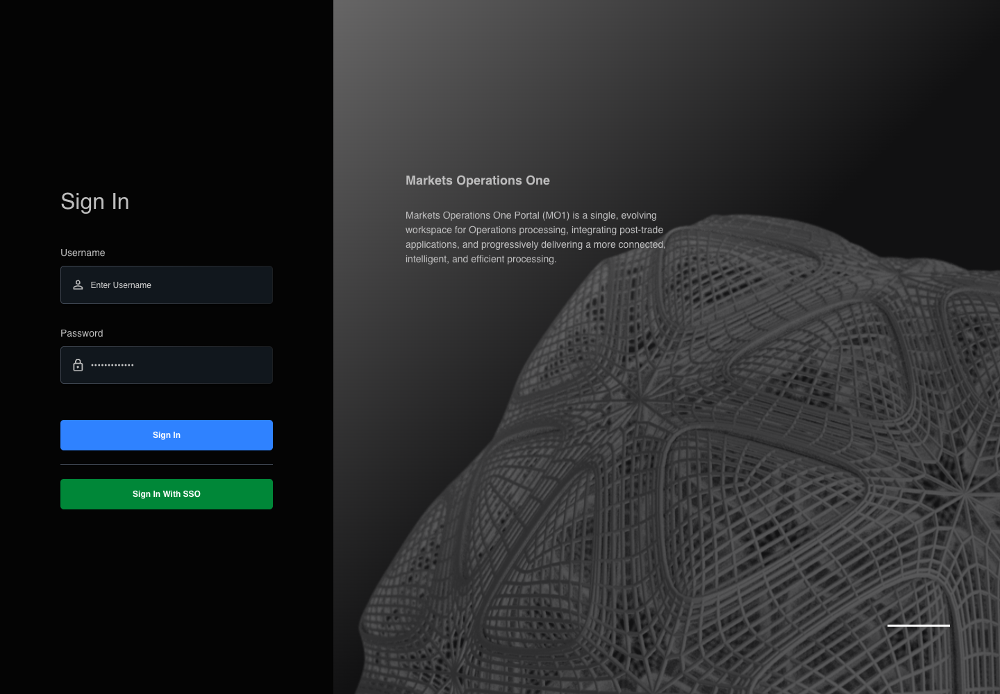
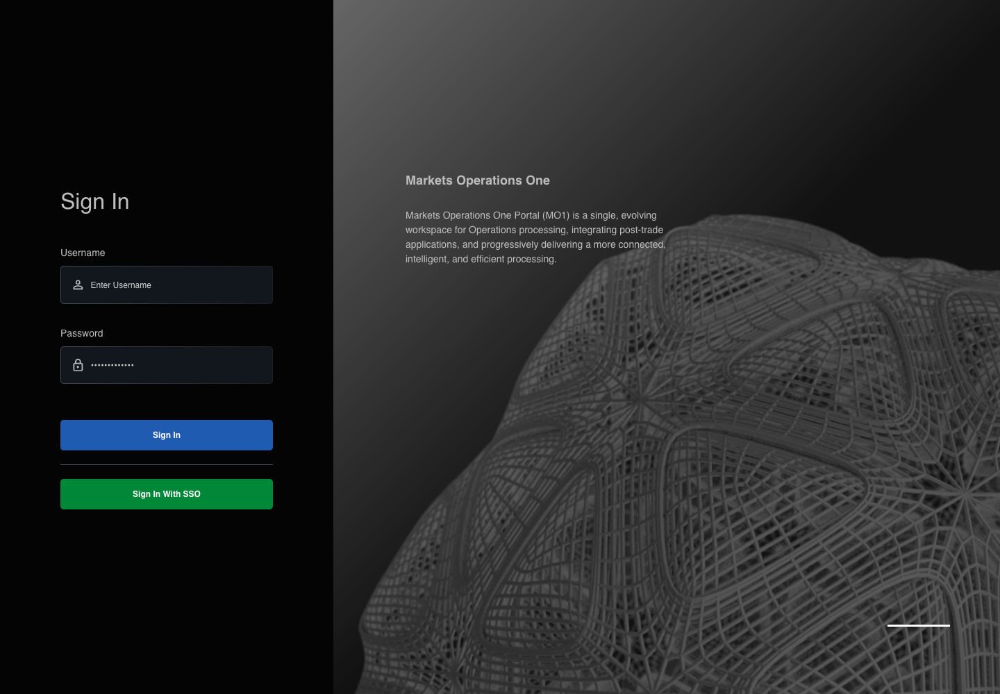

AUTH-013 actual React prevents incomplete credential submission
PASS · application/run-002/auth-013-actual-react-prevents-incomplete-credential-submission-d689a7d43d93-attempt-1 · ACTUAL_APPLICATION_LOCAL_SERVICES
Actual mfe-base React application from the local webpack server. Controlled login API responses; no external identity service.
2026-10-22T04:14:56.722Z to 2026-10-22T04:14:58.214Z
Assertions and result · Artifact manifest · Exact run inputs and source hashes
Result SHA-256:a13d147255a2fd83c1cdc94db3683831918578796b3317c06d8f7f15649adf26Machine observations
- canonical-mapping.json
3c6852efa2a5cd9dc3b3303c33d4415e4f2e428ade2bc71cfb411591528ba306 - credential-request-observation.json
730f7434bd9ef90ae876623b4f42d22d3df0c3c5d8b97e0a5054a2ef2f39d5c3 - initial-context.json
b775ec4eb23c8f22dba2c4de9deea752fdad3d290ea68cbf08a316ab7a2c48fb
Screenshot capture: CAPTURED. Named frames: 4.

The LOCAL login page is visible before credential input.
2026-10-22T04:14:57.536Z · 1440×1000Step: tasks/ui-test-coverage-20261022/test-cases.md#L632; canonical assertion lines 637, 638, 639, 640
SHA-256:
99567bb3808af958792a6b38879d848938c08b417fb7dfff75bde75fcbd51a3a

The canonical incomplete input is present before submission.
2026-10-22T04:14:57.670Z · 1440×1000Step: tasks/ui-test-coverage-20261022/test-cases.md#L632; canonical assertion lines 637, 638, 639, 640
SHA-256:
9050e5e608349281e11bd080590ea1c268bbd3ecfc84392f0e1b92e61271a4b8

The sign-in controls remain visible after the incomplete submission.
2026-10-22T04:14:57.820Z · 1440×1000Step: tasks/ui-test-coverage-20261022/test-cases.md#L632; canonical assertion lines 637, 638, 639, 640
SHA-256:
c5a11cbfa70ea1a3baf8f7e78ca0aa78517c68a3160fd61fcdc427a5f89a256f
The final visible state after the named test assertions.
2026-10-22T04:14:58.019Z · 1440×1000Step: Test source: /Users/lushevol/code/github/ratan-release-impact/workbench/e2e/audit-specs/login-environment.spec.ts:129
SHA-256:
c5a11cbfa70ea1a3baf8f7e78ca0aa78517c68a3160fd61fcdc427a5f89a256fScreenshots establish visible state only. Assertions and traces support functional claims.